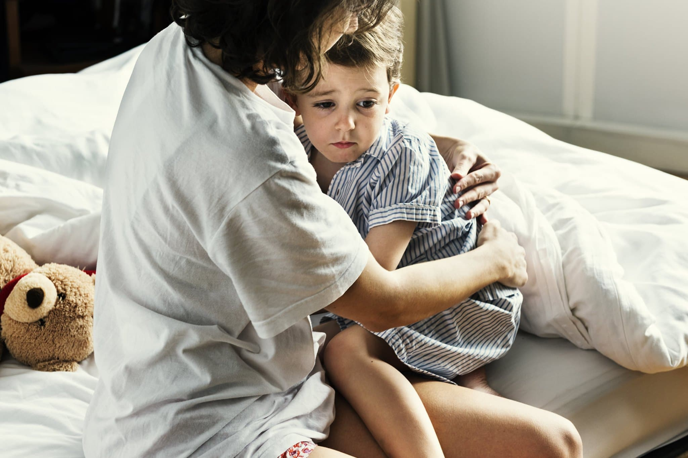

הורים יקרים שלום, כמה מילים על התמודדות עם לחץ ופחד...
עד כה, הייתי משוכנעת שבמצבי לחץ בהם צפים רגשות קשים, אני משדרת "עסקים כרגיל". עד שפעם אחת בני (בן ה-18) אמר לי: "אמא, די להיאנח" — בכלל לא ידעתי שאני נאנחת.
פעמים רבות אנו משדרים בשפת הגוף שלנו את תחושותינו, לרוב לא במודע, והילדים קולטים הכול. הילדים הצעירים חשופים למידע כמעט בכל הערוצים: הטלוויזיה, שיחות מבוגרים מסביבם ועוד. פעמים רבות אין ביכולתם להבין את המשמעות המדויקת של הדברים, אך הם קולטים את המציאות מתוך הרגשות והתגובות שלנו המבוגרים — ומושפעים ממצבי הרוח שלנו, מהמתח ומאווירת אי השקט בבית.
להורים תפקיד חשוב בליווי ילדיהם
- על ההורים להסביר את פשר האירועים שאינם ברורים וליצור אצל הילדים תחושת מוגנות וביטחון. אצלכם הם מחפשים מענה למצוקה ולפחד.
- הסבירו לילד בדיוק מה עושים בזמן אזעקה, ועשו זאת ללא לחץ אלא בצורה עניינית.
- מתוך רצון להגן על ילדיהם מפני המציאות, הורים רבים אינם מדברים איתם על המצב. אך זו טעות. מומחים סבורים כי יש צורך לדבר על הדברים בהתאם לגיל הילדים, ולענות על כל שאלותיהם בצורה ברורה. האמת הברורה טובה מפתרונות שהילדים ימציאו בדמיונם.
- בשיחות שמקיימים עם הילדים צריך להעביר את התחושה שהפחד והמתח הם משותפים לכולם.
- הקשיבו לרגשותיהם. אם הילדים לא מצליחים לשתף בשיחה, ניתן להשתמש בציור משותף או בהמצאת סיפור דמיוני שנותן ביטוי לפחד.
- כדאי לחשוב יחד עם הילדים על פתרונות להפגת המתח: משחק משותף, יצירה משותפת, בישול, פעילות ספורט ועוד.
- השתדלו ליצור שגרה ולשמור על סדר יום קבוע ככל הניתן — הקביעות מעניקה לילדים תחושת ביטחון.
- הימנעו ככל הניתן מלכעוס על הילדים. זכרו שגם אתם מתוחים מהמצב ולכן עליכם לאסוף את עצמכם ולא להגיב בעצבנות.
- עליכם להיות מאוד סבלניים כלפי כל התנהגות הנובעת מהפחדים והלחץ. ימים קשים אינם הזמן המתאים ל"חינוך" — חבקו את ילדיכם כמו תמיד ויותר.
- כדאי להישאר עם ילדיכם או לכל הפחות להשאירם עם מבוגר קרוב ואהוב. אלו אינם ימים מומלצים לפרידות שאינן הכרחיות.
וזכרו, כל זמן קשה יחלוף, כולנו נחזור לשגרה המבורכת, ומרבית הילדים יתמודדו עם המציאות בצורה טובה.
אורית.
מעוניינים לדעת עוד? אורית זמינה לשאלות ופגישות ייעוץ.
צרו קשר